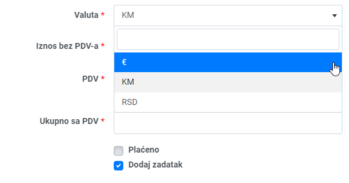
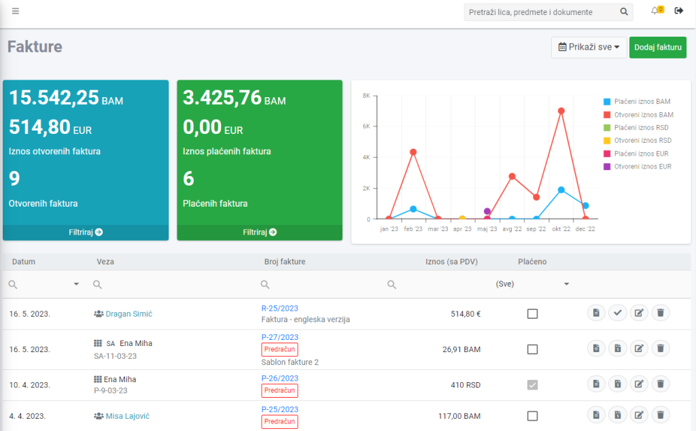
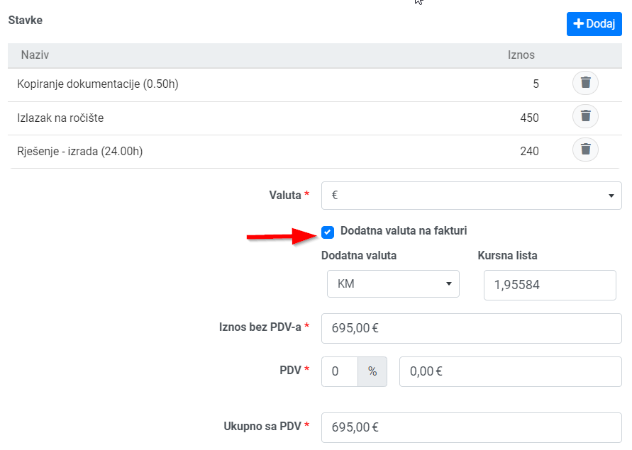
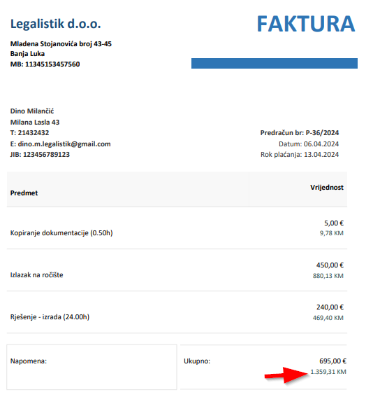

Ako izdajete fakture u različitim valutama, sada ih možete izabrati u padajućem meniju pri generisanju fakture:

Takođe, u statistici plaćenih i otvorenih faktura, prikazane su sve valute:

Ako želite da vam se na samoj fakturi prikazuju cijene usluga u valuti u kojoj naplaćujete od klijenta, ali i u drugoj valuti (na primjer u domaćoj valuti, jer vam banka traži da na fakturi stoji i domaća valuta), potrebno je samo da uključite opciju Dodatna valuta na fakturi, i izaberete valutu u padajućoj listi. Kursna lista je prikazana, ali je možete i korigovati po potrebi:

Nakon snimanja fakture, prikazane su obe izabrane valute:
